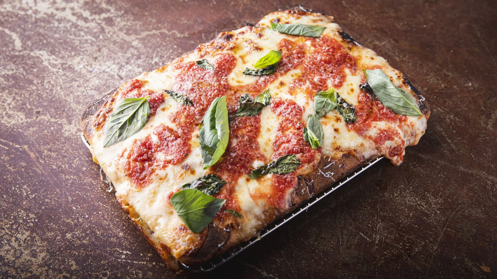

Our Recipes
Classic Neapolitan
Master the art of authentic Neapolitan pizza with our detailed guide.
View Recipe Watch the tutorial.

Sicilian Style
Create thick, crispy-bottomed Sicilian pizza at home.
View Recipe Watch the tutorial.
Chicago pizza
Master the art of authentic Neapolitan pizza with our detailed guide.
View Recipe Watch the tutorial.
St. Louis–style pizza
Learn the secrets behind the perfect NY slice.
View Recipe Watch the tutorial.
Margherita Pizza
Create thick, crispy-bottomed Sicilian pizza at home.
View Recipe Watch the tutorial.